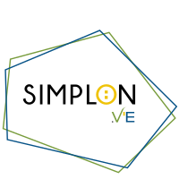
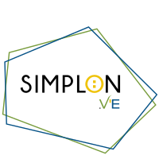

La carte des ZAR'DEV

SimplonVE
- Poleyrieux accueille 20 simploniens pour sa première promo.
- Tous ont un parcours et un profil différent.
- Cette carte permet de situer chacun d'eux.


- Poleyrieux accueille 20 simploniens pour sa première promo.
- Tous ont un parcours et un profil différent.
- Cette carte permet de situer chacun d'eux.
SimplonVE